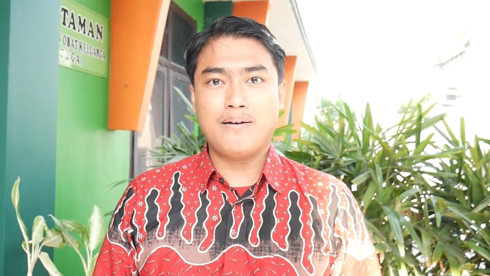
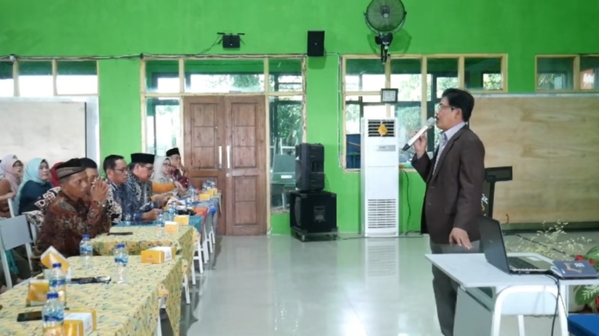
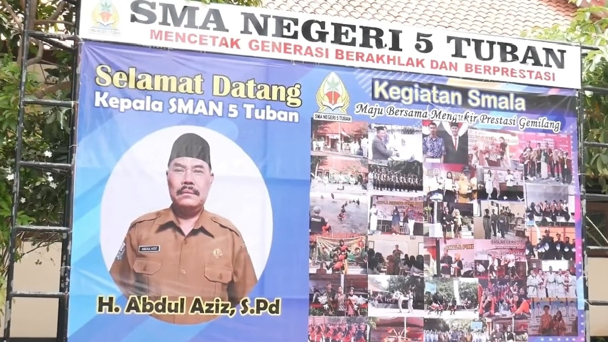
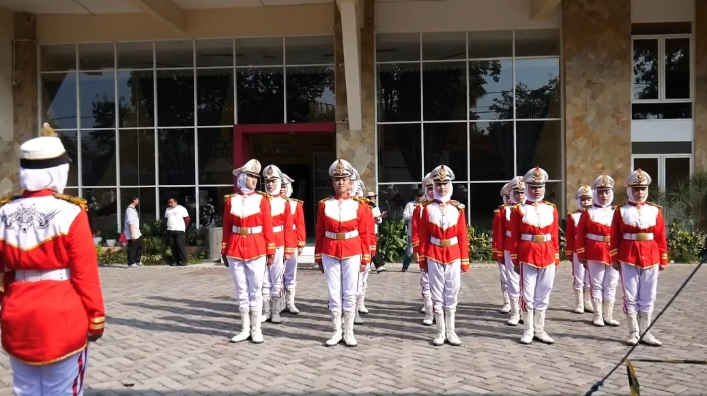

Visi
Terwujudnya generasi beriman dan bertakwa serta berakhlak mulia. bernalar kritis, disiplin, berprestasi, mandiri, bergotong royong dan berkebhinekaan global menuju era digitalisasi.
Selamat datang di portal resmi SMAN 1 Menganti Gresik. Sebuah media yang menyajikan semua informasi dan kegiatan serta prestasi SMAN 1 Menganti. Semoga dengan hadirnya portal ini dapat membawa kemanfaatan untuk dunia pendidikan kabupaten Gresik pada khususnya dan semua masyarakat kabupaten Gresik pada umumnya terutama berkaitan dengan dunia pendidikan bersama SMAN 1 Menganti
Terwujudnya generasi beriman dan bertakwa serta berakhlak mulia. bernalar kritis, disiplin, berprestasi, mandiri, bergotong royong dan berkebhinekaan global menuju era digitalisasi.
1. Menumbuhkan penghayatan keberadaan Tuhan Yang Maha Esa dan selalu berupaya mentaati segala perintah seta larangan-Nya yang diwujudkan melalui budi pekerti yang baik terhadap diri sendiri, terhadap sesama, lingkungan dan negara Indonesia. *representasi dari : Visi beriman dan bertakwa serta berakhlak mulia
2. Meningkatkan budaya literasi serta membangun karakter peserta didik sebagai pembelajar sepanjang hayat yang selalu berpikir obyektif, sistematis dan saintifik. *representasi dari : Visi bernalar kritis
3. Mengembangkan karakter patuh terhadap nilai-nilai yang berlaku baik di sekolah maupun di luar sekolah dengan penuh kesadaran melalui kegiatan intrakurikuler maupun ekstrakurikuler. *representasi dari : Visi disiplin
4. Meningkatkan kualitas pembelajaran dan bimbingan secara berkesinambungan yang dapat mengembangkan peserta didik unggul dalam pengetahuan dan teknologi. *representasi dari : Visi berprestasi
5. Mengembangkan kesadaran peserta didik agar memiliki rasa percaya diri, tidak bergantung pada orang lain, bertanggung jawab, berperilaku berdasarkan prakarsa diri serta mampu melakukan kontrol diri. *representasi dari : Visi mandiri
6. Mengembangkan sikap solidaritas, mampu berkolaborasi, memiliki kepedulian yang tinggi dan suka berbagi pada sesama melalui kegiatan intrakurikuler maupun ekstrakurikuler. *representasi dari : Visi bergotong royong
7. Mengembangkan sikap menghargai budaya, mampu berkomunikasi dan berinteraksi antar budaya, menghargai keberagaman, memiliki toleransi terhadap perbedaan dan wawasan ragam budaya daerah, nasional dan global. *representasi dari : Visi Berkebhinekaan global
1. Mempersiapkan peserta didik yang beriman, bertakwa kepada Tuhan Yang Maha Esa serta berakhlak mulia.
2. Menghasilkan lulusan yang bernalar kritis, kreatif, mampu menghasilkan karya, mampu menyelesaikan permasalahan yang dihadapi dan membuat keputusan yang tepat serta memiliki sifat terbuka terhadap penemuan baru.
3. Menanamkan rasa disiplin kepada peserta didik agar menjadi manusia yang memiliki kepekaan, patuh terhadap aturan dan memiliki pola hidup yang teratur.
4. Meningkatkan peran peserta didik di berbagai lomba akademik dan non akademik serta mempersiapkan lulusan yang berkepribadian, cerdas, berkualitas dan unggul dalam bidang akademik maupun non akademik sesuai dengan bakat yang dimiliki peserta didik sehingga mampu bersaing untuk melanjutkan pendidikan ke jenjang yang lebih tinggi.
5. Menghasilkan lulusan yang berjiwa kokoh, mandiri dan mampu mengembangkan potensi diri melalui kegiatan ekstrakurikuler pramuka, paskibra dan kegiatan lainnya yang meningkatkan kemandirian siswa
6. Mempersiapkan peserta didik menjadi generasi yang memiliki rasa tolong-menolong, peka terhadap lingkungan, mampu berkolaborasi, memiliki kepedulian serta suka berbagi dengan sesama
7. Membekali peserta didik agar menjadi generasi yang mampu memahami keberagaman budaya , berwawasan terbuka dan memiliki toleransi terhadap segala perbedaan
Mahfudhot Hadza al Yaum (kata-kata mutiara hari ini) oleh Ust.Moh Afif Efendi
Salah satu bukti karya siswa dalam pembelajaran bahasa Indonesia dengan topik teks eksposisi
Cuplikan materi parenting oleh motivator Bapak Sulthon Hakim, M.Psi dari Malang
Rombongan SMAN 1 Menganti mengantarkan bapak H. Abdul Azis, S.Pd yang akan bertugas sebagai kepala Sekolah di SMAN 5 Tuban
Cuplikan kegiatan pembelajaran seni rupa fase F dengan topik menciptakan karya seni yang berdampak sub topik digital coloring bersama bapak Rangga
Cuplikan penampilan Paskobram dalam ajang LKBB Nawasena di SMAM 1 Gresik yang mana menghasilkan prestasi